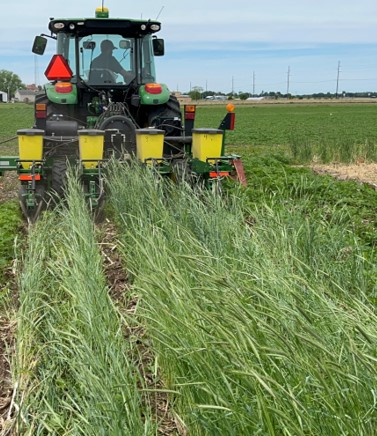

As growers across the US Upper Midwest adopt more cover crops and continue to plant their soybean earlier in the season, research investigating the influence of these agronomic decisions on weed management and crop yield is warranted. Giant ragweed (Ambrosia trifida), an early-emerging and competitive species, is among the most troublesome weeds in soybean cropping systems across the Upper Midwest. In Wisconsin, giant ragweed has an early and extended emergence pattern, which starts in April and extends well into late June (Striegel et al. 2021).
Thus, a field study was conducted by WiscWeeds Graduate Research Assistant Guilherme Chudzik in 2022 and 2023 at the Rock County Farm, Janesville, WI, to evaluate the impact of soil management practices, soybean planting time, and PRE-emergence (PRE) herbicide application on giant ragweed management and soybean yield.
Study treatments consisted of:
Four soil management strategies: i) conventional tillage (chisel-plow in the fall and field cultivator in the spring), ii) no-till, and fall-planted cereal rye treatments terminated at two different times: iii) cereal rye early terminated (10-14 days before planting) and iv) cereal rye late terminated ('planting green'; within three days of soybean planting).
Two soybean planting times: early (early to mid-May) and late (late-May).
Two PRE herbicide treatments: no PRE and yes PRE (Sonic @ 6.45 oz/acre) at soybean planting time.
To simulate common practices adopted by Wisconsin soybean growers, Enlist One (2 pts/acre) + Roundup PowerMax (2 pts/acre) + AMS were applied postemergence (POST) when ~50% of giant ragweed plants within a specific treatment reached ~4 inches in height. Giant ragweed density at the time of POST application and soybean yield data were collected in this study and are discussed below.
STUDY RESULTS
Cereal Rye Cover Crop. Delaying cereal rye termination in the spring by 3 to 4 weeks allowed the cover crop to accumulate >six times more biomass when compared to the earliest termination time (Figure 1).

Planting Green vs Giant Ragweed. The planting green system did not result in greater giant ragweed density reduction at the time of POST when compared to the early termination of cereal rye. The cereal rye cover crop biomass levels achieved in this study were not high enough to suppress giant ragweed (please see Chudzik's previous blog post "Quantifying success: Cereal rye versus giant ragweed"). In other words, cereal rye cover crop biomass can suppress giant ragweed emergence when enough biomass is present at the time of weed emergence; because giant ragweed emerges so early in the season and not enough cereal rye biomass was accumulated at that point, not enough giant ragweed suppression was observed in this study. This is different from what we see with waterhemp (Amaranthus tuberculatus), a smaller seeded weed species that emerges later in the season when the cereal rye cover crop has had enough time to accumulate biomass (see post by Nunes "How we believe cereal rye cover crop suppresses waterhemp").
Pre-emergence Herbicide Adoption. The use of an effective PRE herbicide not only contributed to an overall reduction in giant ragweed density at POST, but also helped to control other weeds at the end of the season (Figure 2). The effective weed control provided by the use of an effective PRE program had a notably positive impact on soybean yield, highlighting the benefits of adopting such practice as a component of an integrated weed management program.

How to Reduce Giant Ragweed POST? The most effective combination of strategies to reduce giant ragweed density at the time of POST in this study was either tillage or pre-plant herbicide burndown, delayed soybean planting time (regardless of cover crop adoption), and the use of an effective PRE-emergence herbicide program.
Planting Time: Giant Ragweed Management vs Soybean Yield. Delaying planting time on average by 15 days led to lower soybean yield but also reduced the number of giant ragweed plants needed to be controlled POST. Delaying soybean planting time allowed us to control more giant ragweed seedlings prior to planting with either tillage or herbicide burndown, thus reducing the number of giant ragweed plants to be controlled in season. So the choice boils down to: i) prioritizing early soybean planting for higher yields being aware that you will deal with more giant ragweed plants in season versus ii) delaying soybean planting as an opportunity to manage more giant ragweed pre-plant being aware of lower soybean yield potential.
Planting Green and Soybean Yield. The springs of 2022 and 2023 at the Rock County Farm were drier than normal thus truly challenging for the planting green system. This strategy resulted in soybean yield loss when soybean was planted late (late May). However, when soybean was planted early (early to mid-May), the planting green yield was similar to the other soil management strategies (i.e., tillage, no-till, early terminated cover crop). Thus, when planting green, planting soybean early appears to be less risky from a yield loss standpoint, particularly in drier years.
So back to the original question, "Can cereal rye cover crop suppress giant ragweed without impacting soybean yield?", the results of this study indicate that other strategies can be more effective for giant ragweed management and less risky to soybean yield compared to late cover crop termination because not enough cereal rye biomass was produced at the time of active giant ragweed emergence in this study. It's important to mention that cereal rye was drilled late in the fall of 2021 and 2022 (11/05/2021 and 10/28/2022) into heavy corn residue, which may explain the lower than antecipated cover crop biomass accumulation during the springs of 2022 and 2023 (Figure 2).

The research reported herein was led by Guilherme Chudzik (WiscWeeds MS Graduate Research Assistant) and presented during the 2023 North Central Weed Science Society Meetings (December 2023) in Minneapolis, MN. Thanks to Ryan DeWerff (WiscWeeds Research Specialist), Nick Arneson (former WiscWeeds Outreach Program Manager), and the WiscWeeds team for their assistance with these field experiments, and the Rock County Farm staff for supporting our giant ragweed management research. This project was partially funded by the Wisconsin Soybean Marketing Board.
This article was written by Guilherme Chudzik (WiscWeeds MS Student) and Dr. Rodrigo Werle (Associate Professor & Extension Weed Scientist). Both authors are affiliated with UW-Madison.